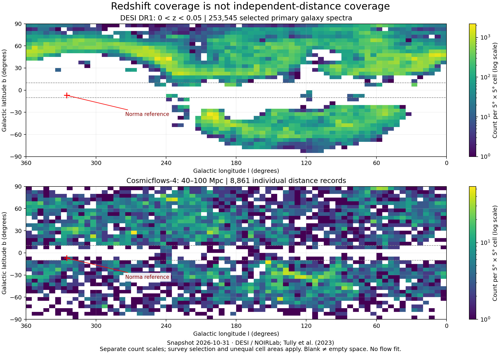
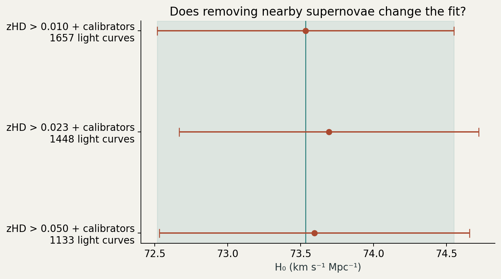

Catalog provenance
SHA-256, LF-normalised text
fae408d7ea351930cf00436b7b1e2e607de5c2b7c723487c4489ff1e3b881540Browse 8 versioned evidence files. Table previews simply display stored rows. Consult the project report for the source, processing steps, and inference assumptions.


fae408d7ea351930cf00436b7b1e2e607de5c2b7c723487c4489ff1e3b881540379820b89326cbb2e11b85a7a60cde43e14ced9ddfb1a1975df25099c46f35efa467b71ff558c66addb5208a69c2d053916192ad6d20370fdc70afd8a7f3d6c370bcdde7fb1edb210185a65f0209608a34f53f2975762b5594e87a43ce71e06d371b43d34d35e92c3a2fff592093869bf2176f1e2b852e6011dd936dd730f115a68e674ef446bc86230ca45c9b9c641d45321f60bdf861faf808516a8f2f9d74fbb38c6e32dba224474b8fcc4b6acd4b0fe8556c52b56afaab36a97177275cc93057a8c73b31b4db2da139a598d5033f8538b9ff997be9044fd5390e82a237dbSHA-256 values verify the stored files. They do not independently validate the scientific analysis. Rebuild this page with python scripts/evidence_catalog.py followed by python scripts/render_evidence_page.py.